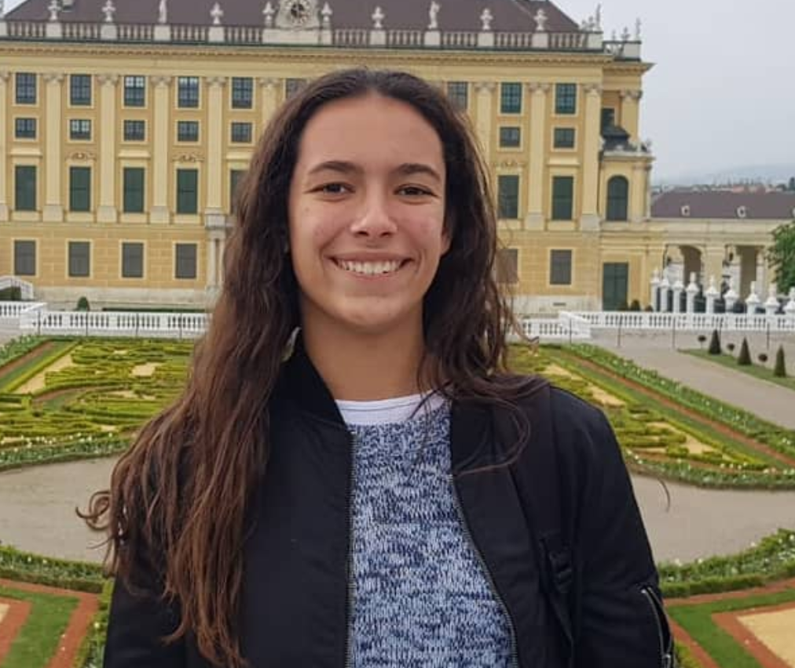

Acerca de mí
Descripción personal
Como persona organizada y con una gran motivación, soy capaz de adaptarme a cualquier circunstancia y dar siempre lo mejor de mí en cualquier proyecto, al mismo tiempo que me esfuerzo por trabajar en equipo y fomentar valores como los del compañerismo.
Educación
- Bachiller bilingüe en Ciencias Naturales - Colegio San Marcos
- Francés: DELF B2. Examen de nivel confirmado, intermedio-avanzado (B2 en el MCRE).
- Ingeniería Industrial. Carrera en curso -ITBA
- AICE Diploma. Bachillerato Inglés por la Universidad de Cambridge
Experiencias laborales
Mi experiencia laboral es muy límitada. Teniendo 19 años y estudiando tiempo completo, ésta se reduce a tan sólo dar clases particulares a alumnos de la escuela secundaria.
Skills
- Iniciativa
- Trabajo en equipo
- Liderazgo
- Creatividad
Mi foto
Hobbies
- Ski
- Wakeboard
- Coding
- Francés
- Ensamble musical
Lucía en Henry
Llegue a Henry por un contacto de mi papá, empecé porque siento que la programación es el futuro, utilizarlo como herramienta el día de mañana, poder desarrollarme y poder aprender en este rubro, lograr trabajar y estudiar al mismo tiempo es lo que mas me entusiasma!